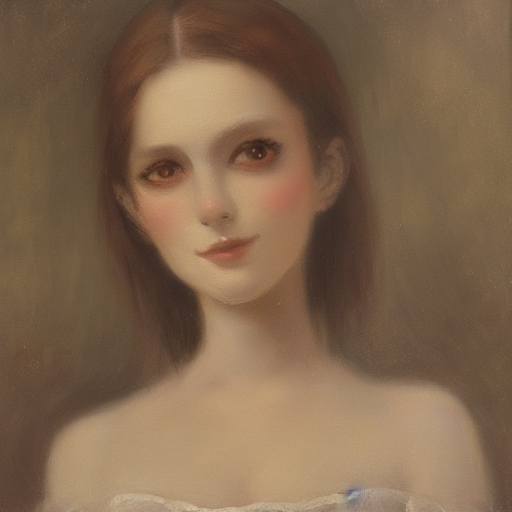
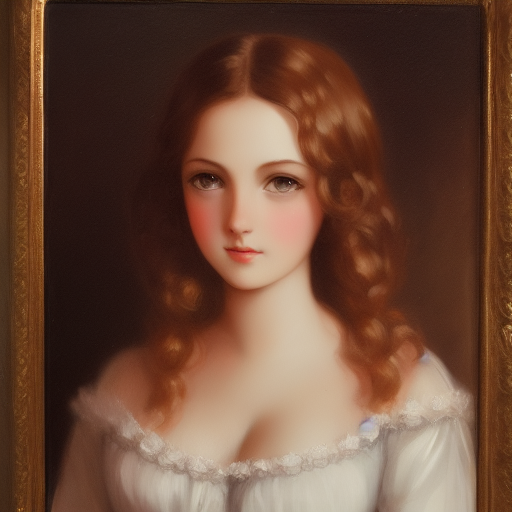
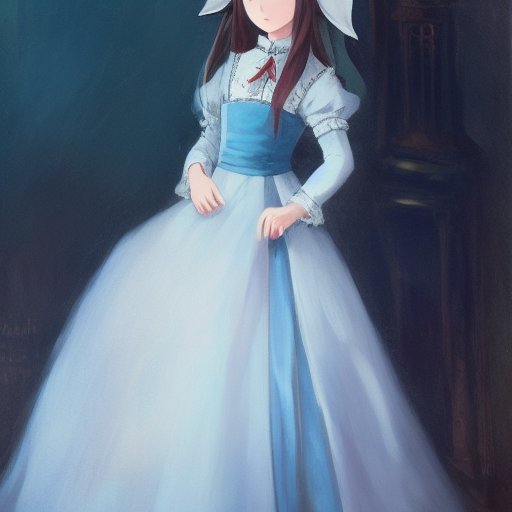
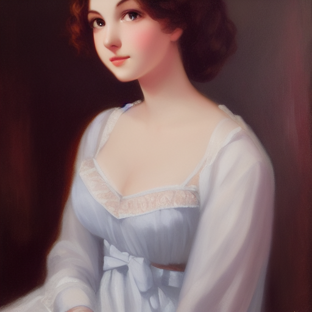
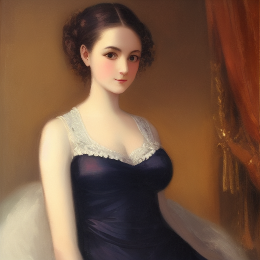
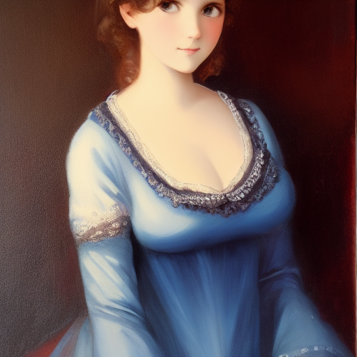

Stable diffusion is a machine learning algorithm which can be used to generate images of people who never existed.
The results of the work are based on the following sources:
Here you should see the results of the algorithm which generated the images





